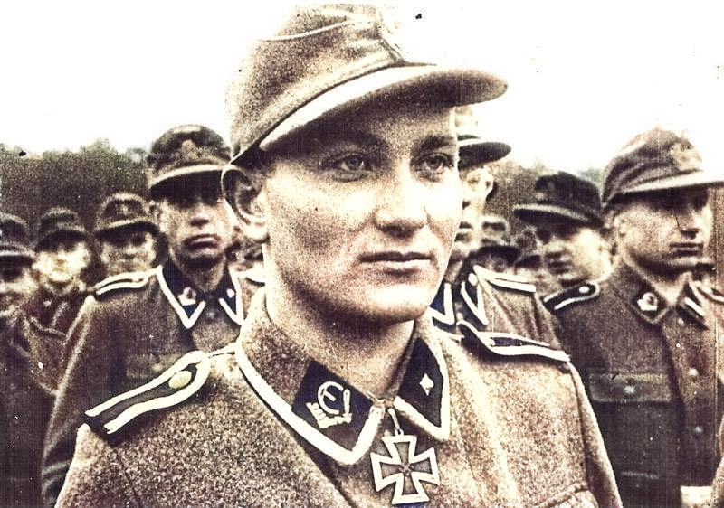

Recruitment
In Ingria Albert had been powerless to help the family out of its miserable existence, and there was nothing he could about his mother dying. However, coming up to his 19th year he had an opportunity to show his allegiance to his 'new country' by joining the only army that directly challenged Stalin.
He had been working in Jaarva County when many workmates decided to answer the call of recruitment. About 69,000 Estonians (6% of the population) found service in the German army including deserters from the Russian army.

Service
In late Spring 1943 he joined the Estonian Legion and received three months of training in Poland. Heavy cannon were horse-drawn and Albert was made responsible for their care. His unit was sent to reinforce the front in Silesia and enroute was attacked by partisan fighters.
It is presumed he was placed in the 1st SS Volunteer Regiment which became the Volunteer Battalion Narwa. This detachment in turn was subsumed into the 5th SS Panzer Division 'Wiking' which was comprised of men from the Baltic and Nordic countries. The 5th Panzer Narwa fought in the Ukraine from mid July to Sept 1943.
Izjum ( Operation Citadel (17 July 43)) in particular was a nightmare for Albert's unit given that they were unmoved by an intense Soviet tank offensive yet on their flanks fellow units had collapsed.
Because of high German losses depleted units had to merge
so keeping track of Albert's movements becomes difficult.
In February 1944 a reinforced Russian army amassed on the Estonian border at
Narva.
Tactfully, Estonian units were depatched to defend the border but his particular unit became surrounded, his friends around him were wounded or dead. Albert had a chest wound not considered serious enough to leave the line. When the request to retreat was refused by HQ a badly injured Estonian told Albert to save himself. He put a bullet through his left hand and was allowed to leave the line. An onslaught followed.
Narva had been lost by 20th September 1944 and a stand at Tannenberg eventually ended in defeat. In due course Tallinn fell to the Red Army and by November the only Estonian force remaining were the partisan Forest Brothers.
The remnants of Estonian units retreated south with the depleted 20th SS Div to East Prussia.
German troops suffered high losses and survivors were thoroughly exhausted. From this situation and no record of an orderly exit Albert somehow made it to Danzig (Gdansk) where he witnessed ships being bombed.
Pursued by the Russian army and continually harassed by Russian planes German units headed south following the Oder river to East Prussia. As this region was populated with Germanic families they too joined the long line of refugees migrating south to avoid the Soviet army.
The remnants of the defeated German battalions intended to continue towards the Allied forces encamped further west and south but for some reason Estonian-SS units surrendered their arms to Czech forces. They expected to be treated as POWs but as soon as they were disarmed and secured in a compound they were subjected to atrocities. Upwards of 500 were summarily executed. Albert was particularly upset at the repeated rape of the nurses who had been tending to his wounded hand.
There followed a mass break-out of the compound which included Albert and all headed directly toward American lines.
Estonia Re-occupied
In 1944 Stalin's Red Army returned to occupy the three baltic states including Estonia.
To avoid Russian reprisals many people fled to Sweden and Finland.
Aleksandr's wife Maria (nee Seiler), his daughter Edith and son Alfred escaped by boat to Sweden. For some reason Aleksander did not accompany them. He remained in Parnu with Maria's ailing mother.
The Russian secret police,
NKVD, soon located his whereabouts. He was arrested and imprisoned for six years.
His wife, Marie, and children lived in Sweden for the rest of their lives. Aleksandr survived his incarceration but on release was not allowed to rejoin his wife and children in Sweden.
He lived for years with his in-laws, the Seiler family, in Pärnu.
In 1954, he moved to north-east Estonia to live with his sister Amalie Männart. He lived here until finally moving into a retirement home. Salme and Lonni recalled making visits.
Aleks died in 1956 it would seem, lonely, perhaps heartbroken. His grave is in Lüganuse.